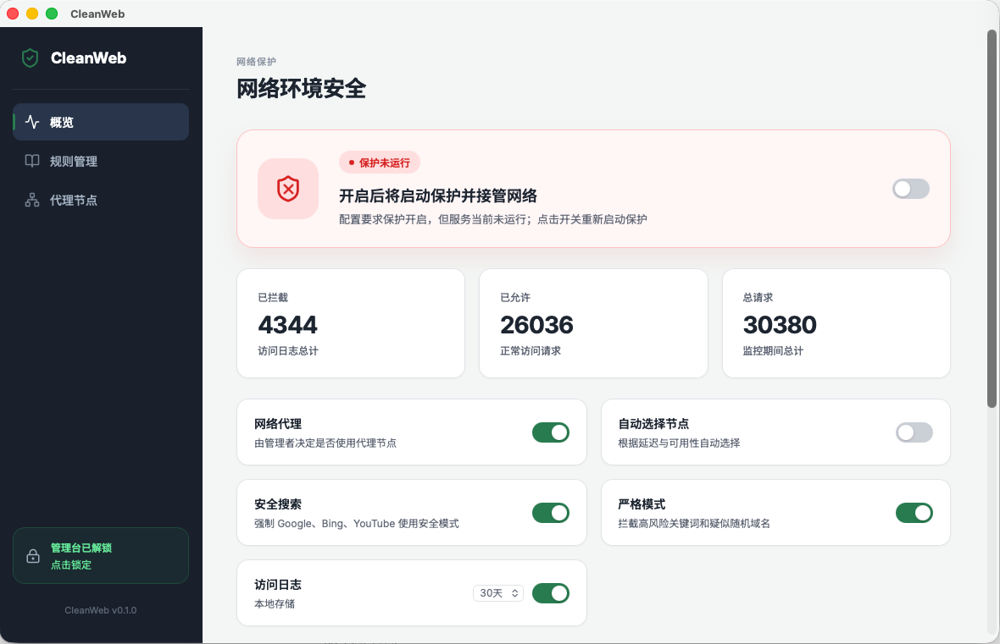
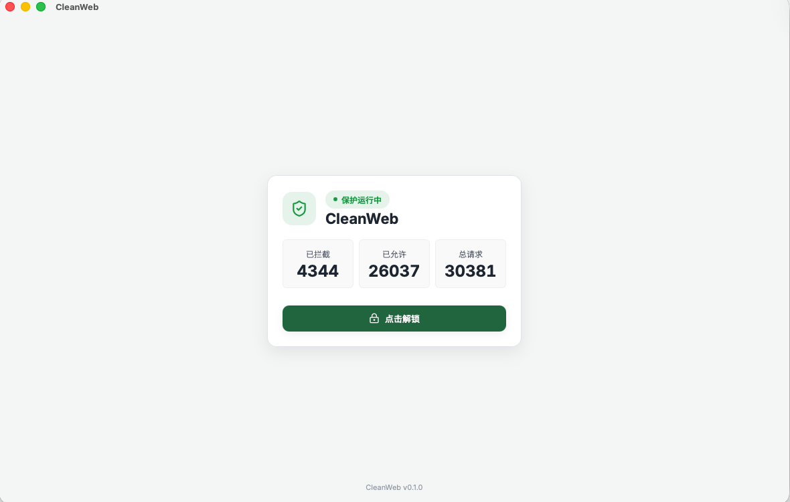

保护状态必须真实
只有进程和路由健康检查同时成功后，客户端才显示“保护运行中”。配置要求开启但内核未运行时，会明确提示恢复保护。

产品界面

只有进程和路由健康检查同时成功后，客户端才显示“保护运行中”。配置要求开启但内核未运行时，会明确提示恢复保护。
产品原则
诈骗、钓鱼、恶意软件、家长规则和核心内容类别先执行。只有被允许的流量才进入直连或代理路由。
代理订阅中的 DNS、TUN、脚本、本地端口和绕过策略会被丢弃，CleanWeb 保持唯一策略权威。
内核异常时优先恢复；无法恢复时保持网络可用，并在界面里准确显示保护失效。
核心能力
基于域名、DNS 查询、目标 IP 和 CIDR 做决策，覆盖成人内容、赌博、毒品、暴力、自残、仇恨、诈骗、钓鱼和恶意软件。
在浏览器策略支持范围内强制 Google SafeSearch、YouTube 受限模式，并关闭浏览器内置 DoH。
支持内置规则、第三方过滤源、手动黑白名单和路由规则。更新失败时继续使用最后一次有效版本。
每个连接最多记录一条最终决策，支持保留期、筛选、清空和 CSV 导出。日志默认只保存在本机。
导入自己的 Clash/Mihomo 订阅、单节点链接、二维码或配置文件，支持选点、延迟测试和故障切换。
规则、订阅、代理和日志详情需要管理密码解锁。忘记密码时只允许通过本机系统管理员授权重置。
代理边界
它只导入用户自己的代理来源，并把代理放在过滤之后。代理关闭或节点失效时，过滤继续运行；需要代理的网站自然连接失败，普通直连网站继续访问。
隐私边界
V1 只基于域名、DNS 查询、目标 IP 和 CIDR 做判断，不检查网页正文、图片、视频、AI 对话或完整 URL 路径。
管理密码、规则、订阅元数据和访问日志保存在本机。诊断包由用户主动导出，并默认脱敏。
CleanWeb 会提示其他 VPN/TUN 或系统代理冲突，但 V1 采用尽力共存策略，不终止或修改第三方应用。
平台路线
测试版下载
当前版本适合功能测试和真实网络验证。正式发布前仍需要完成签名、公证、Windows 服务化和真实网络验收。